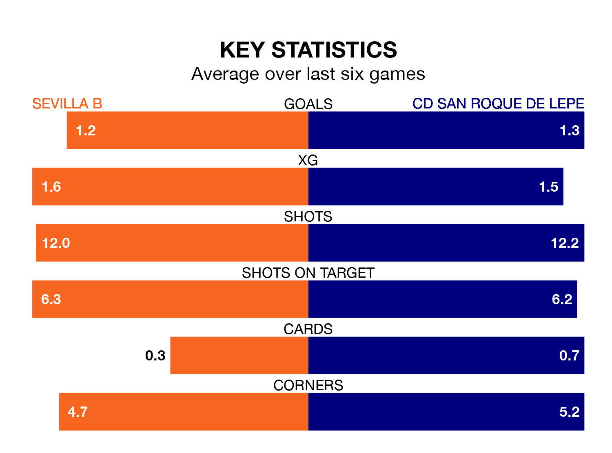

Sevilla B are heavy favourites to keep all three points at home in Sunday's early kick-off against CD San Roque de Lepe.
Sevilla B, who sit top of the Segunda División RFEF Group 4 with 29 games played, are priced at 1.5 to seal victory.
Sitting 12 places and 24 points behind them in the table, San Roque de Lepe are 6.0 to win with *Betting Company*, while the draw is at 3.6.
With 47 goals in 29 games so far this season, Sevilla B are the league's highest scorers with 1.6 goals per game. And they are conceding fewer than average, letting in 15 goals at a rate of 0.5 per game.
San Roque de Lepe are also above average scorers, with 1.1 goals per game, compared to a league average of 1.0. They have also conceded 1.1 goals per game.
In the last 10 years, Sevilla B and San Roque de Lepe have played each other on seven occasions. Sevilla B won two of them, San Roque de Lepe four, and they drew once.
On average, Sevilla B scored 1.0 goal and San Roque de Lepe 1.3 in those matches.
Their last meeting was on November 26, when Sevilla B won 2-1 away.
The home team are in reasonable form in the Segunda División RFEF Group 4, with three wins and three draws from their last six games.
With two wins and two draws over that period, the visitors' form is worse – they have taken eight points from 18, compared to Sevilla B's 12.
Sevilla B's last match was on Sunday, a 1-1 draw against Racing Cartagena MM, with Mateo Mejia getting the goal for Sevilla B.
San Roque de Lepe lost 2-1 against Marbella last time out, on March 30, with Roberto Rodríguez Abreu on the scoresheet.
Updated: 16:41 (UTC), 04/04/24